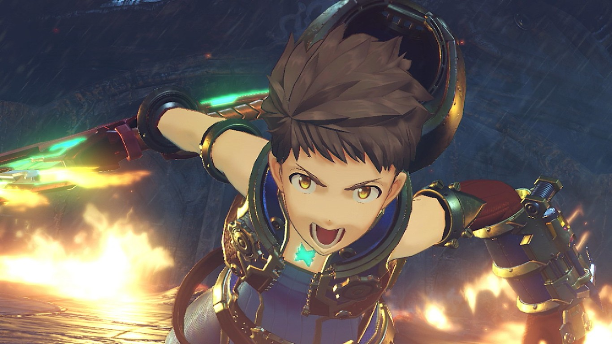

html>
Con todos los lanzamientos tan impactantes que se han producido hasta el momento
en Nintendo Switch resulta sorprendete que a Nintendo todavía le queden ases en la manga
con los que sorprendernos y el próximo gran título que llegará a su consola,
y perfecto para cerrar este 2017, será 'Xenoblade Chronicles 2'.
Tras el éxito alcanzado por 'Xenoblade Chronicles' en Wii y, aunque en menor medida, 'Xenoblade Chronicles X'
en Wii U, es normal que Monolith Soft nos volviera a presentar una nueva entrega
de la saga para Nintendo Switch, aunque en esta ocasión lo hacen al inicio de la vida de la consola
en lugar de al final. Nosotros hemos podido probar un adelanto de las ocho primeras horas de este gran
JRPG y es sobre las que vamos a pasar a hablaros a continuación.
Respetando la fórmula del éxito
En 'Xenoblade Chronicles 2' el núcleo de la jugabilidad permanece intacto respecto a sus
predecesores: nos encontramos ante un JRPG con combates estratégicos en tiempo real,
un mundo enorme que explorar y una historia simplemente excelente.
Todo esto mezclado con un abrumador abanico de misiones secundarias y
opciones con las que mejoraremos a nuestros personajes.
El mundo en el que se desarrolla el juego, Alrest, parte de la idea de que la gente vive en titanes,
como ocurría en la primera parte. Sin embargo, en vez de dos titanes colosales,
esta vez el mundo estará compuesto por muchos más de diferentes tamaños:
desde algunos que sirven como embarcaciones pesqueras hasta
otros que son como pequeños países. Fuera de ellos el mundo está
cubierto por un vasto océano tapado por un manto de nubes.

La historia parte de la ilusión del protagonista, Rex, de alcanzar el Elíseo,
la tierra legendaria donde todos podrían vivir en paz, a salvo de la
inminente muerte de los titanes y la consecuente pérdida de espacio para vivir.
Aunque de momento no hemos podido jugar mucho, la historia promete,
a pesar de (o precisamente por) utilizar el típico recurso de ir acompañados de personajes
misteriosos que estarán llenos de secretos a los que iremos conociendo
con más profundidad a su debido tiempo,
lo cual nos mantendrá enganchados en todo momento.
No obstante, y como en casi todos los RPGs, será necesario compaginar la historia principal
con las misiones secundarias y exploración. Al principio el juego parece más lineal que sus predecesores,
pero pronto llegaremos a titanes más
grandes que nos permitirán más libertad de exploración.
Puestos a comparar, cabe destacar que la cantidad de misiones secundarias que nos encontramos,
al menos al principio del juego, es menos abrumadora que en los otros títulos de la saga,
los cuales nos presentaban docenas de desafíos nada más empezar. Más adelante veremos
si el juego nos ofrece más contenido en este aspecto
o se mantiene comedido en misiones secundarias.
Los Pilotos y sus Blades
El sistema de combate es muy parecido a los otros dos juegos: combates
en tiempo real en los que nuestro personaje atacará de manera automática,
dejándonos a nosotros el control sobre su movimiento y las artes que usará.
Aunque en un principio puede parecer simple, en realidad tiene más miga
que lo visto anteriormente en la serie. Tendremos que combinar
los ataques especiales con nuestros compañeros de equipo y,
según el elemento del ataque que utilicemos,
podremos cancelar determinados ataques enemigos.
El elemento y la clase que tengan nuestros personajes vendrán dados por los seres
que los acompañan: los Blades. Estos nacerán de cubos que podremos descubrir o comprar,
y estarán ligados al personaje que los invoque. Además, esto nos permitirá cambiar de clase
y elemento en pleno combate, ampliando nuestro abanico de ataques.
Los Blades se pueden mejorar de varias maneras: equipándoles chips, que sería el equivalente
de comprar una nueva arma en un RPG tradicional, creando núcleos con los
materiales que encontremos por el mundo y completando logros como matar a
un número determinado de enemigos, utilizar determinados ataques o descubrir
ciertos lugares, para que obtengan
nuevas habilidades pasivas.
Los personajes también podrán equiparse con objetos, algunos que mejorarán sus
atributos mientras los lleven equipados y otros que nos otorgarán beneficios temporales
al usarlos. Eso sí, echamos en falta que los personajes cambien de aspecto al equiparlos
con distintos objetos. Lo único que se modificará será el Blade y el arma que nos otorgue.
Aún nos quedan infinidad de cosas y sitios por descubrir y de las que hablar,
como las ciudades, los comercios y los hábitats de los titanes. Os animamos a leer el
análisis definitivo que publicaremos dentro de unos días una vez hayamos visto
todo el juego de arriba a abajo y podamos comprobar si 'Xenoblade Chronicles 2'
es un digno sucesor de la saga, cosa que de momento promete.